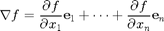
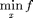
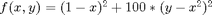

Gradient Descent
Contents
Gradient
Gradient descent method is based on gradient 
gradient always point to the asent direction
Gradient Descent
f is object function, and this is unconstrained 
f = (@(X) (exp(X(1,:)-1) + exp(1-X(2,:)) + (X(1,:) - X(2,:)).^2));
%f = (@(X) (sin(0.5*X(1,:).^2 - 0.25 * X(2,:).^2 + 3) .* cos(2*X(1,:) + 1 - exp(X(2,:))) ))
Fail situation
Rosenbrock function Gradient descent/ascent algorithm zig-zags, because the gradient is nearly orthogonal to the direction of the local minimum in these regions. It's hard to convergence 
%f = (@(X) (1-X(1,:)).^2 + 100 * (X(2,:) - X(1,:).^2).^2); [X, Y] = meshgrid([-2:0.1:2]); XX = [reshape(X, 1, numel(X)); reshape(Y, 1, numel(Y))]; %surf(X, Y, reshape(f(XX), length(X), length(X))) contour(X, Y, reshape(f(XX), length(X), length(X)), 50) hold on;

plot gradient of function
for i=1:5:length(XX) tmp = XX(:,i); g = gradient_of_function(f, tmp); %plot([tmp(1),tmp(1)+g(1)*0.02],[tmp(1),tmp(2)+g(1)*0.02]); quiver(tmp(1),tmp(2),g(1)*0.02,g(2)*0.02) end %quiver(X,Y,DX,DY) %wolfe(f, [1;1], 1) x0 = [-1; -1]; [x, v, h] = gradient(f, x0) [x, v] = fminunc(f, x0) for i=2:length(h) tmp1 = h(:,i-1); tmp2 = h(:,i); quiver(tmp1(1),tmp1(2),tmp2(1)-tmp1(1),tmp2(2)-tmp1(2), 0, 'r','LineWidth',2) end
alpha =
0.2000
alpha =
0.2000
alpha =
1
alpha =
1
alpha =
0.2000
alpha =
1
alpha =
0.2000
alpha =
1
alpha =
0.2000
alpha =
1
alpha =
0.2000
x =
0.7960
1.2038
v =
1.7974
h =
Columns 1 through 7
-1.0000 -1.0271 -0.4515 0.6432 0.8185 0.7755 0.7859
-1.0000 0.4778 0.2130 1.0809 1.1279 1.1801 1.2059
Columns 8 through 12
0.7925 0.7963 0.7956 0.7959 0.7960
1.2007 1.2024 1.2033 1.2039 1.2038
Warning: Gradient must be provided for trust-region algorithm;
using line-search algorithm instead.
Local minimum found.
Optimization completed because the size of the gradient is less than
the default value of the function tolerance.
x =
0.7961
1.2039
v =
1.7974